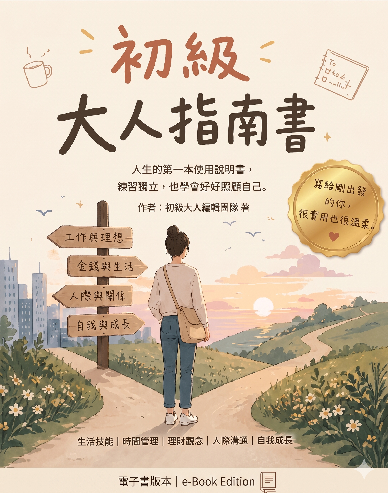
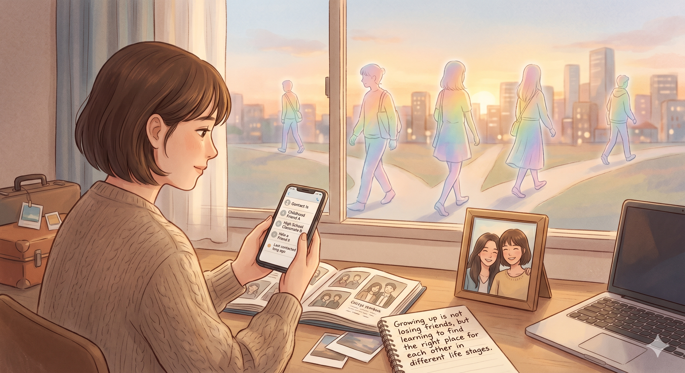
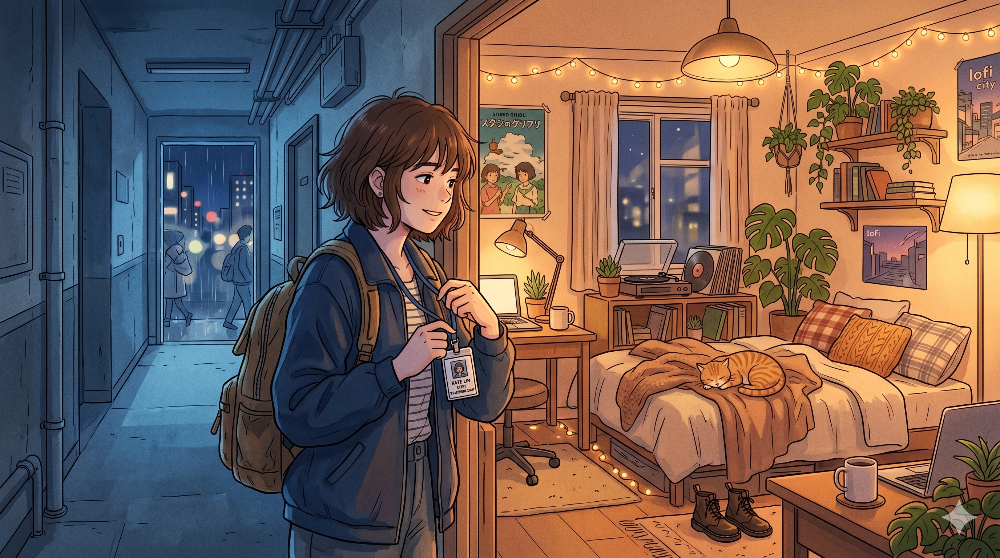
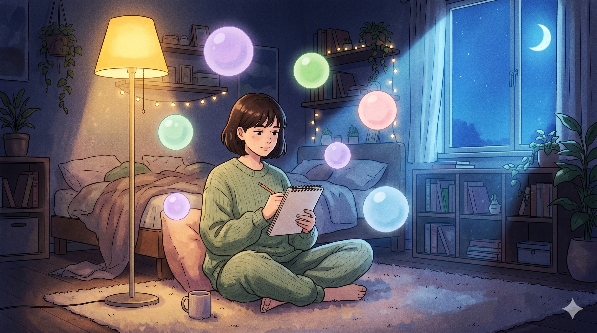

你是否也曾有過這樣的瞬間？翻開通訊錄時卻赫然發現自己沒什麼朋友，每當想要拓展生活圈去嘗試不一樣的事物時，卻感到相當的無力，同時也很難交到新的朋友，到最後甚至連僅有的那些老朋友，都變成了極少主動聯繫的人。
這並非只是你的無病呻吟，而是無數成年人的共同寫照。環顧四周，進入職場的大人都告訴我們要好好把握還在讀書的時光，因為進入職場後，每個人都戴著面具點頭微笑，再加上每天家裡與公司兩點一線、環境單一的現實，讓我們在步入社會後，讓原有的社交圈漸漸萎縮成了一座孤島。
本章將從問題發想開始，並一步步探索：朋友為什麼會漸行漸遠？人際關係究竟發生了哪些變化？面對交友困境時，又能如何找到適合自己的相處方式。
成長從來不只是年齡的增加，更是一場重新認識自己、理解他人，以及學會珍惜與放下的旅程。長大，不是失去朋友，而是在不同的人生階段裡，學會找到適合彼此的位置。

我們總在懷念學生時代的單純，那為什麼長大後，交朋友這件事會變得如此舉步維艱？從學生到大人，社交的本質發生了三個核心的質變：
學生時代的我們，像是被放進同一個溫室裡的植物。我們穿著同樣的制服、抱怨著同一個老師、為了同一場考試熬夜、對著同一個偶像尖叫。那時的友誼建立在高度的「同質性」上——因為我們的生活軌跡幾乎完全重合，所以產生共鳴是一件毫不費力的事情。
然而，大人的世界是一片充滿差異的曠野。畢業後，有人選擇創業打拼，有人追求安穩考取公職；有人早早步入婚姻生兒育女，有人享受單身專注於自我成長；有人留在故鄉，有人則漂泊異鄉。當生活軌跡開始分岔，「共同語言」會迅速流失。
在成年人的社交裡，維繫關係的關鍵不再是我們有多像，而是我們能否尊重並理解彼此的不同。當單身的朋友能理解育兒朋友的疲憊，這段關係才能在差異中存活下來，大人間的友誼會需要更高的包容力與同理心。
回想過去，一句「我心情不好，陪我聊聊」，朋友就能馬上放下手邊的事。學生時代我們最不缺的就是時間，交朋友圖的往往是純粹的情緒價值。
但成年人的世界，每個人都被工作、貸款、家庭責任榨乾了精力，時間也就成為最稀缺的資源。大人的社交不自覺地會傾向功能價值的考量，現實逼著我們衡量：這場聚會值得我犧牲睡眠嗎？這段關係能為工作帶來啟發嗎？
我們不再有精力去承接無止盡的負能量，而是更傾向與能帶來新資訊、提供實質幫助的人建立連結，這是一種保護自己能量的生存機制。
小時候交朋友全憑直覺，關係只有簡單的喜歡與不喜歡。但走入社會後，每個人身上都被貼滿了標籤，因此大人的社交往往夾雜著階層、頭銜與人脈利益的交換。
很多時候參加聚餐不是因為喜歡，而是因為是個「有用的局」。成年人若能在這層層社會濾鏡之下，依然找到願意卸下防備、不談頭銜的朋友，這份友誼反而比學生時代更加深刻與珍貴。
從理解大人社交的本質轉變後，我們就不該再將精力耗費在無效的感傷中，面對這些無法迴避的社交痛點，一味地迎合或委曲求全，只會讓自己陷入嚴重的內耗。成熟大人的解法，是學會主動篩選，將人際關係的遙控器握回自己手裡。
我們往往因為一天有超過三分之一的時間待在職場，就不自覺地將同事視為潛在的朋友候選人，這其實是許多職場內耗的根源。
我們經常因為害怕被邊緣化而勉強自己參加各種局，但回想一下，那些充滿攀比心態的同學會，或是總是在抱怨與八卦的下午茶，結束後你感到的是充實，還是被抽乾能量的疲憊？
大人的破局之道： 勇敢地向「消耗你」的關係說不。一個人在家看書、泡澡、追劇，甚至只是發呆，都比戴著面具迎合他人來得有價值。
如果答案都是「否」，你可以用溫和但堅定的態度禮貌地說不。真正懂你的朋友不會因此生氣。
學生時代我們總希望擁有一大群朋友，走到哪都熱熱鬧鬧；但成年後你會發現，能承載你人生重量的人，其實寥寥無幾。如果把每個人的社交圈畫成一個同心圓，我們必須學會把不同的人放在適合的位置。

交友的過程，宛如一趟不斷篩選與沉澱的旅程。隨著我們從單純的學生時代步入充滿差異與現實考量的成人世界，人際關係的本質無可避免地發生了質變。
面對這些轉變，我們不該將精力耗費在無效的感傷與委曲求全中，而是要學會主動篩選。
長大從來不是失去朋友，而是在不同的人生階段裡，學會找到適合彼此的位置。透過人際關係的斷捨離，我們終將騰出心靈的空間，把最珍貴的感性與陪伴，留給那些真正對的人。

第五章完 ｜ 願你在大人的世界裡，自在享受高品質的孤獨。